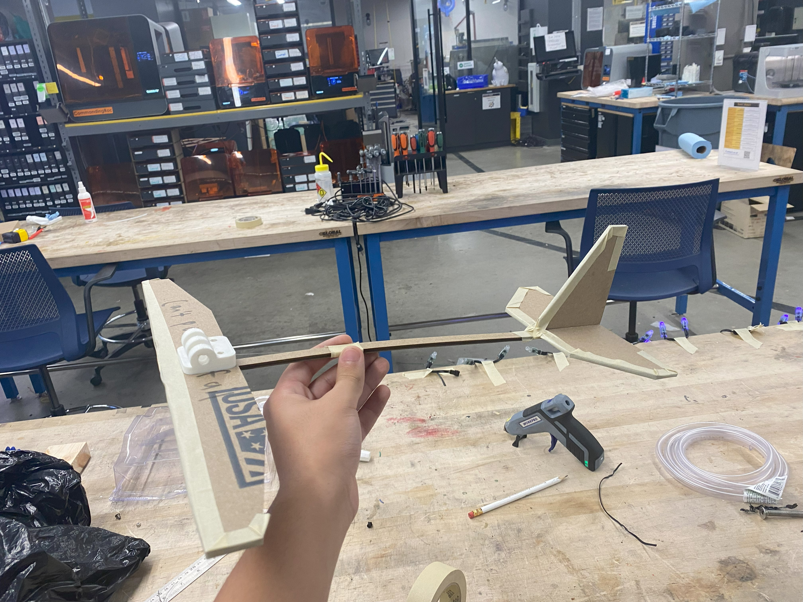
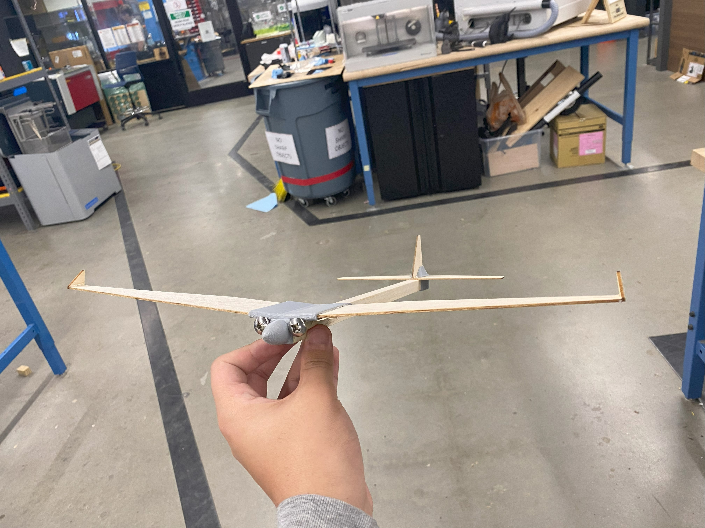

For my AE 1601 (Intro to Aerospace Engineering) course in my first year, I designed and built a glider to explore the fundamental features and principles of gliders and their impact on performance. The project culminated in a competition to determine which glider could fly the furthest, which my design won.
The project took place over several weeks, during which the professor gradually introduced aerospace design concepts — aspect ratio, wing tapering, wing sweeping, etc. We were given limited balsa wood for the final build, so I turned to the Invention Studio and a lot of thrown-away cardboard to make prototype designs using the laser cutters.


I tried out many different features to see what worked, learning with every crash. Early prototypes revealed issues with wing stability, as some designs fluttered during test launches. I adjusted the wing dihedral angle and added a stabilizing tail, applying principles of aerodynamic stability from AE 1601. Each prototype was tested by hand-launching, and I recorded flight distances to quantify improvements. I also integrated some custom-designed and 3D-printed components to achieve features such as the precise-degree dihedral and a hub to shift the center of mass forward.
At the competition, I got consistent and good results from each of my throws, winning the small competition. It was so much fun to do that process for the first time in my aerospace major, and a great introduction that set me on my way to continue to grow as an engineer.